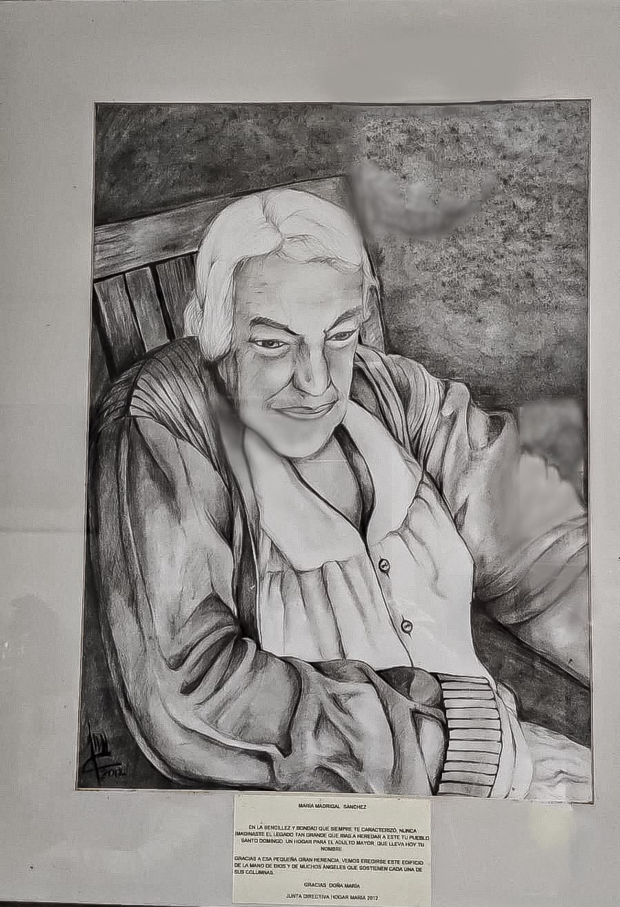

Un hogar lleno de dignidad, amor y cuidado para las personas adultas mayores.

El Hogar María nació el 23 de diciembre de 1992, cuando Doña María Madrigal Sánchez donó una propiedad que se constituyó en la base de la Fundación María.
Doña María fue una mujer de escasos recursos que, después de sufrir un accidente, quedó con limitaciones físicas y necesitó atención.
Los vecinos de la comunidad se preocuparon por su situación y gestionaron recursos para brindarle una vivienda digna.
Inspirados por la atención que Doña María recibió en el Hogar Albernia, los vecinos propusieron crear un hogar para personas adultas mayores con limitaciones físicas y económicas.
Doña María Madrigal Sánchez dona una propiedad que se convierte en la base de la Fundación María.
La Fundación María queda legalmente constituida el 23 de diciembre.
El hogar abre sus puertas a los primeros beneficiarios.
Se coloca la primera piedra para construir el actual edificio del Hogar María.
Gracias a la colaboración de instituciones, pueblo domingueño y personas generosas, el nuevo edificio abre sus puertas el 12 de julio.
Brindar un servicio de calidad a los residentes mediante una atención integral, en instalaciones adecuadas según la normativa vigente.
Ser una institución sólida, dedicada a la atención integral de las personas adultas mayores en condición de riesgo social, pobreza y discapacidad.
Atención y cuidados para nuestros residentes.
Apoyo para mantener y mejorar la movilidad.
Alimentación saludable y balanceada para nuestros adultos mayores.
Un ambiente de protección, cuidado y compañía.
Servicio de lavandería para los residentes.
El bienestar de nuestros residentes es posible gracias al trabajo conjunto de diferentes personas, equipos e instituciones.
Personal administrativo y técnico que contribuye al funcionamiento del hogar.
Cuidadores y personal encargado de brindar atención a los residentes.
Cocina, lavandería, vigilancia, misceláneos y equipo de mantenimiento.
Instituciones gubernamentales y personas que colaboran con el hogar.
Buscamos brindar a cada persona adulta mayor un trato digno, afectuoso y respetuoso.
Interesarnos por sus gustos, necesidades, estado de salud, consejos y experiencias.
Mostrarles amor mediante un trato digno, conversaciones, abrazos y otras manifestaciones afectuosas.
Promover el compromiso y el voluntariado en la atención de adultos mayores.
Desarrollar sensibilidad ante las conductas y padecimientos propios de esta etapa de la vida.
Adultos mayores
Colaboradores
Las donaciones permiten continuar brindando un hogar lleno de dignidad y amor a nuestros adultos mayores.